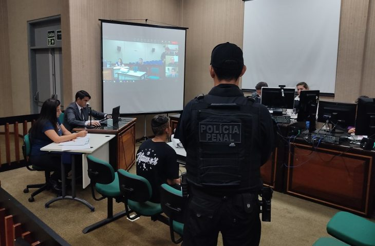
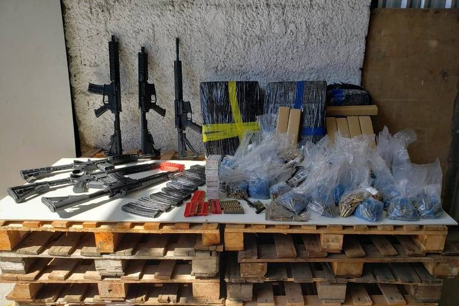
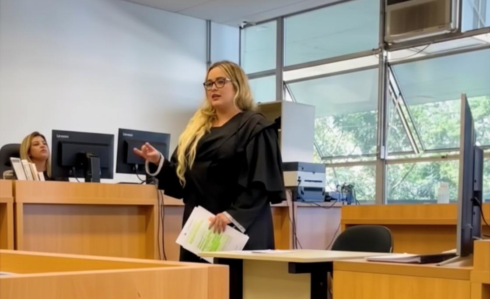

Habeas corpus em 24h. Defesa estratégica desde o primeiro minuto.
Atendimento prioritário 24h — análise imediata e estratégia para maximizar suas chances.
📱 Respondo em 5 minutos | ⚖️ Defesa desde primeira hora | ✅ +450 casos resolvidos
Prisões podem ser revertidas quando não atendem aos requisitos legais. Medidas urgentes bem fundamentadas podem restabelecer a liberdade.

Momento decisivo que define prisão ou liberdade. Defesa técnica pode evitar preventiva indevida.
Erros de cálculo e falta de revisão mantêm pessoas presas além do tempo correto. Acompanhamento técnico garante direitos.

Diferença entre uso e tráfico depende de análise técnica das provas. Estratégia correta altera o resultado do processo.
Casos sensíveis exigem atuação técnica e responsável, na defesa ou proteção da vítima.
Medidas e recursos em instâncias superiores com fundamentação especializada.

"Meu filho foi preso em flagrante. Em 48h a Dra. Paula conseguiu a liberdade provisória. Nunca vou esquecer desse resultado."
"Defesa impecável em Tribunal. A Dra. Paula mudou completamente o rumo do meu processo. Muito profissional, dedicada e atenciosa."
"Atendimento 24h de verdade. Chamei à noite, ela atendeu pessoalmente. Competência e comprometimento real."
Cada caso é único. Oferecemos análise gratuita na primeira consulta. Valores variam conforme complexidade, procedimentos e urgência. Parcelamento disponível em alguns casos.
Habeas corpus urgente: 24-48h para protocolar. Custódia e liberdade provisória: até 72h em geral. Cada caso depende da situação concreta e urgência.
WhatsApp com atendimento pessoal. Chamadas urgentes são priorizadas. Você fala direto com a Dra. Paula ou sua equipe especializada, sem intermediários.
Sim. Experiência em tráfico, homicídio, crimes hediondos, delitos contra menores. Quanto mais grave, mais importa ter defesa estratégica desde o início.
Como estabelecido pela OAB, não prometemos resultado, mas garantimos máximo empenho, estratégia técnica e atuação em todas as instâncias possíveis.
Receba análise estratégica gratuita no seu email + consulta prioritária
Atendimento 24h. Fale agora com a Dra. Paula.
🚨 FALAR AGORA NO WHATSAPP Atendimento 24h
Atendimento 24h